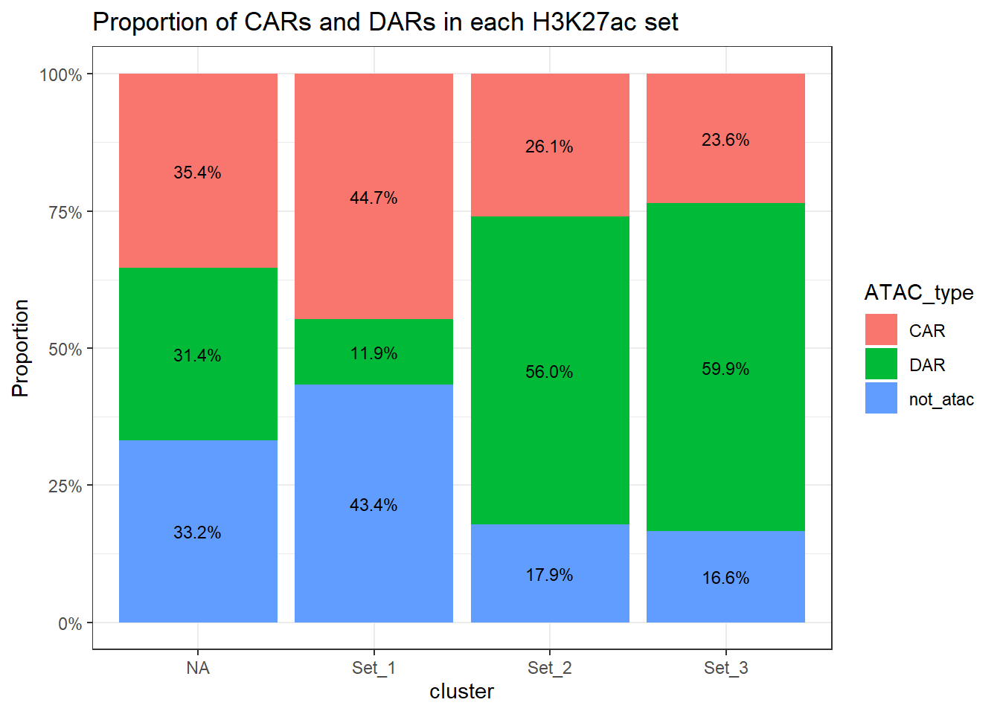
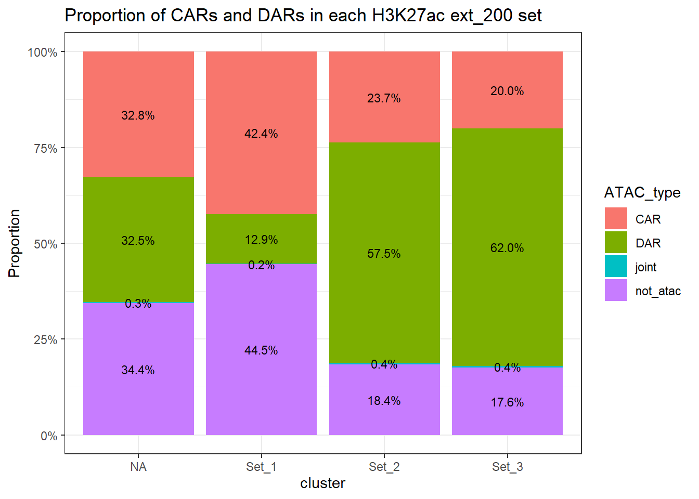
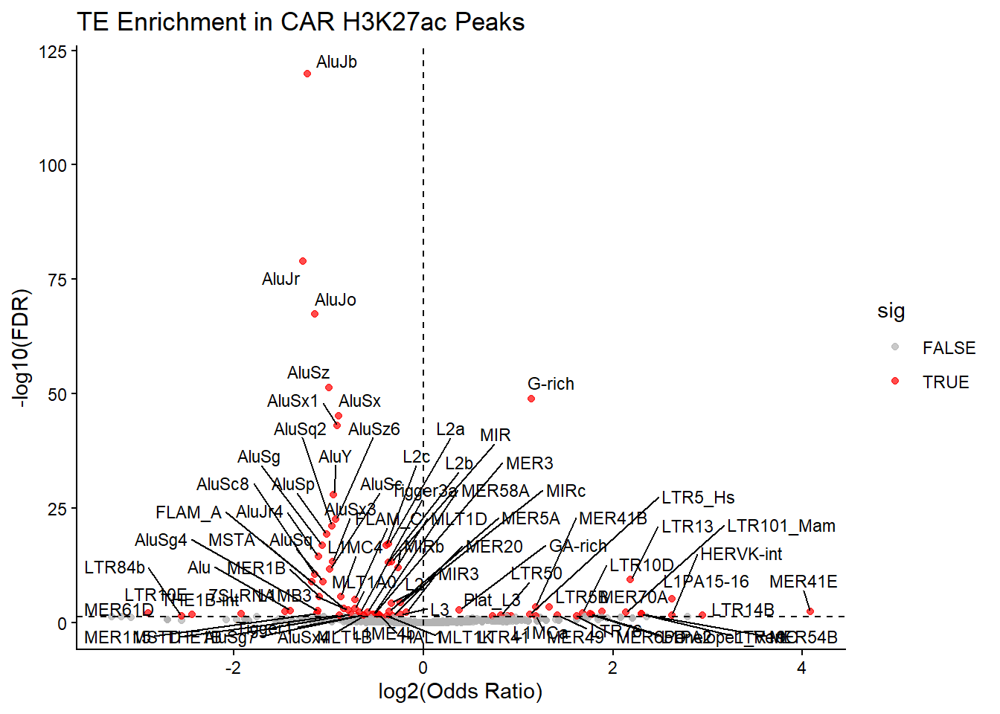
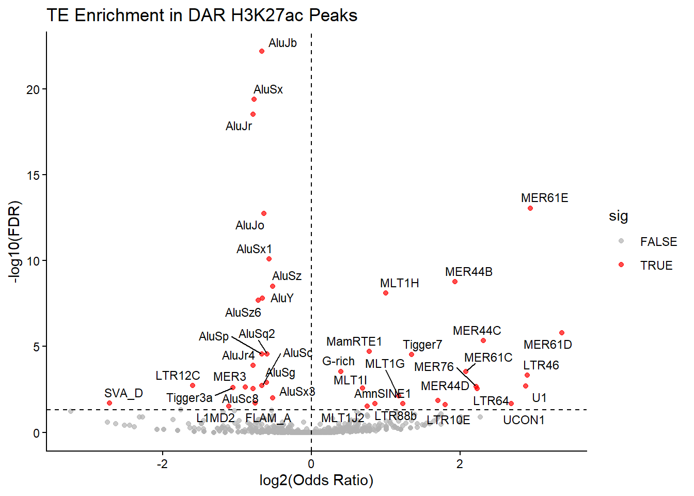

Last updated: 2026-05-19
Checks: 7 0
Knit directory: DXR_continue/
This reproducible R Markdown analysis was created with workflowr (version 1.7.2). The Checks tab describes the reproducibility checks that were applied when the results were created. The Past versions tab lists the development history.
Great! Since the R Markdown file has been committed to the Git repository, you know the exact version of the code that produced these results.
Great job! The global environment was empty. Objects defined in the global environment can affect the analysis in your R Markdown file in unknown ways. For reproduciblity it’s best to always run the code in an empty environment.
The command set.seed(20250701) was run prior to running
the code in the R Markdown file. Setting a seed ensures that any results
that rely on randomness, e.g. subsampling or permutations, are
reproducible.
Great job! Recording the operating system, R version, and package versions is critical for reproducibility.
Nice! There were no cached chunks for this analysis, so you can be confident that you successfully produced the results during this run.
Great job! Using relative paths to the files within your workflowr project makes it easier to run your code on other machines.
Great! You are using Git for version control. Tracking code development and connecting the code version to the results is critical for reproducibility.
The results in this page were generated with repository version 6f9458c. See the Past versions tab to see a history of the changes made to the R Markdown and HTML files.
Note that you need to be careful to ensure that all relevant files for
the analysis have been committed to Git prior to generating the results
(you can use wflow_publish or
wflow_git_commit). workflowr only checks the R Markdown
file, but you know if there are other scripts or data files that it
depends on. Below is the status of the Git repository when the results
were generated:
Ignored files:
Ignored: .Rhistory
Ignored: .Rproj.user/
Ignored: analysis/figure/
Ignored: data/Bed_exports/
Ignored: data/Bed_exportsH3K27ac_summit_gr_ext200.bed
Ignored: data/Cormotif_data/
Ignored: data/DER_data/
Ignored: data/Other_paper_data/
Ignored: data/RDS_files/
Ignored: data/TE_annotation/
Ignored: data/alignment_summary.txt
Ignored: data/all_peak_final_dataframe.txt
Ignored: data/cell_line_info_.tsv
Ignored: data/full_summary_QC_metrics.txt
Ignored: data/motif_lists/
Ignored: data/number_frag_peaks_summary.txt
Untracked files:
Untracked: H3K27ac_all_regions_test.bed
Untracked: H3K27ac_consensus_clusters_test.bed
Untracked: MER61C_ERV1_LTR.fa
Untracked: analysis/GREAT_H3K27ac.Rmd
Untracked: analysis/H3K27ac_ChromHMM_FC.Rmd
Untracked: analysis/H3K27ac_KZFP_motifs.Rmd
Untracked: analysis/H3K27ac_TE_investigation_200bp.Rmd
Untracked: analysis/H3K27me3_TE_investigation.Rmd
Untracked: analysis/H3K36me3_TE_investigation.Rmd
Untracked: analysis/LFC_regions_with_TEs.Rmd
Untracked: analysis/Top2a_Top2b_expression.Rmd
Untracked: analysis/drill_down_KZFPs.Rmd
Untracked: analysis/maps_and_plots.Rmd
Untracked: analysis/proteomics.Rmd
Untracked: code/For_john.R
Untracked: other_analysis/
Unstaged changes:
Modified: analysis/Goanalysis_TFs.Rmd
Modified: analysis/H3K27ac_TF_motifs.Rmd
Modified: analysis/H3K27me3_TE_overlap_extend.Rmd
Modified: analysis/TP53_motif_interrogation.Rmd
Modified: analysis/chromHMM_2.Rmd
Modified: analysis/protein_checks.Rmd
Note that any generated files, e.g. HTML, png, CSS, etc., are not included in this status report because it is ok for generated content to have uncommitted changes.
These are the previous versions of the repository in which changes were
made to the R Markdown
(analysis/ATAC_integration_data1.Rmd) and HTML
(docs/ATAC_integration_data1.html) files. If you’ve
configured a remote Git repository (see ?wflow_git_remote),
click on the hyperlinks in the table below to view the files as they
were in that past version.
| File | Version | Author | Date | Message |
|---|---|---|---|---|
| Rmd | 6f9458c | reneeisnowhere | 2026-05-19 | wflow_publish("analysis/ATAC_integration_data1.Rmd") |
| Rmd | 2faad6d | reneeisnowhere | 2026-05-11 | wflow_git_commit(c("analysis/ATAC_integration_data1.Rmd", "analysis/ATAC_integration_data2.Rmd")) |
| html | aec31d7 | reneeisnowhere | 2026-02-06 | Build site. |
| Rmd | 35a2cb2 | reneeisnowhere | 2026-02-06 | wflow_publish("analysis/ATAC_integration_data1.Rmd") |
| html | d950fb2 | reneeisnowhere | 2026-02-06 | Build site. |
| Rmd | 2be9ae7 | reneeisnowhere | 2026-02-06 | first commit |
library(tidyverse)
library(GenomicRanges)
library(plyranges)
library(genomation)
library(readr)
library(rtracklayer)
library(stringr)
library(ggrepel)
library(DT)
library(readxl)DOX_24_ATAC <- readRDS("data/Other_paper_data/Matthews_2025_DOX_24h_ATAC.RDS")
DOX_24_DAR_gr <- DOX_24_ATAC %>%
dplyr::filter(adj.P.Val<0.05) %>%
dplyr::select(peak) %>%
separate(peak, into = c("seqnames","start","stop"),remove = FALSE) %>%
mutate(start=as.numeric(start),
stop=as.numeric(stop)) %>%
as_granges(seqnames = seqnames,
start=start,
end=stop,
strand="*")
DOX_24_CAR_gr <- DOX_24_ATAC %>%
dplyr::filter(adj.P.Val>0.05) %>%
dplyr::select(peak) %>%
separate(peak, into = c("seqnames","start","stop"),remove = FALSE) %>%
mutate(start=as.numeric(start),
stop=as.numeric(stop)) %>%
as_granges(seqnames = seqnames,
start=start,
end=stop,
strand="*")
mcols(DOX_24_CAR_gr)$name <- mcols(DOX_24_CAR_gr)$peak
mcols(DOX_24_DAR_gr)$name <- mcols(DOX_24_DAR_gr)$peak
H3K27ac_summit_gr <- readRDS("data/RDS_files/H3K27ac_complete_summit_gr.RDS")
H3K27ac_summit_gr_ext <- resize(H3K27ac_summit_gr, width(H3K27ac_summit_gr)+400, fix = "center")
peakAnnoList_H3K27ac <- readRDS("data/motif_lists/H3K27ac_annotated_peaks.RDS")
H3K27ac_lookup <- imap_dfr(peakAnnoList_H3K27ac[1:3], ~
tibble(Peakid = .x@anno$Peakid, cluster = .y)
)
H3K27ac_sets_gr <- lapply(peakAnnoList_H3K27ac, function(df) {
as_granges(df)
})
##assigning Peakid as name of summit region
mcols(H3K27ac_summit_gr)$name <- mcols(H3K27ac_summit_gr)$Peakid
# H3K27ac_set_case_lfc <- readRDS("data/RDS_files/H3K27ac_set_case_lfc.RDS")library(GenomeInfoDb)
library(BSgenome.Hsapiens.UCSC.hg38)
export(DOX_24_DAR_gr, "data/Bed_exports/ATAC_DOX_24h_DAR.bed", format = "BED")
export(DOX_24_CAR_gr, "data/Bed_exports/ATAC_DOX_24h_CAR.bed", format = "BED")
genome_sl <- seqlengths(BSgenome.Hsapiens.UCSC.hg38)
genome_sl <- genome_sl[seqlevels(H3K27ac_summit_gr)]
seqlengths(H3K27ac_summit_gr) <-genome_sl
H3K27ac_summit_gr <- trim(H3K27ac_summit_gr)
H3K27ac_summit_gr_ext <- promoters(
H3K27ac_summit_gr,
upstream = 200,
downstream = 200
)
export(H3K27ac_summit_gr_ext,
"data/Bed_exports/H3K27ac_summit_gr_ext200.bed",
format = "bed"
)CAR_H3K27ac_hits <- findOverlaps(H3K27ac_sets_gr$all_H3K27ac, DOX_24_CAR_gr, ignore.strand = TRUE)
H3K27ac_CAR_overlap <- tibble(
hit_id = queryHits(CAR_H3K27ac_hits),
ROI_ID=mcols(H3K27ac_sets_gr$all_H3K27ac)$Peakid[queryHits((CAR_H3K27ac_hits))],
cluster = mcols(H3K27ac_sets_gr$all_H3K27ac)$cluster[queryHits(CAR_H3K27ac_hits)],
CAR_ROI = mcols(DOX_24_CAR_gr)$peak[subjectHits(CAR_H3K27ac_hits)])
H3K27ac_CAR_peakid <- H3K27ac_CAR_overlap %>%
group_by(ROI_ID) %>%
distinct(ROI_ID)
CAR_H3K27ac_hits_ext <- findOverlaps(H3K27ac_summit_gr_ext, DOX_24_CAR_gr, ignore.strand = TRUE)
H3K27ac_ext_CAR_overlap <- tibble(
hit_id = queryHits(CAR_H3K27ac_hits_ext),
ROI_ID=mcols(H3K27ac_summit_gr_ext)$Peakid[queryHits((CAR_H3K27ac_hits_ext))],
cluster = mcols(H3K27ac_summit_gr_ext)$cluster[queryHits(CAR_H3K27ac_hits_ext)],
CAR_ROI = mcols(DOX_24_CAR_gr)$peak[subjectHits(CAR_H3K27ac_hits_ext)])
H3K27ac_ext_CAR_peakid <- H3K27ac_ext_CAR_overlap %>%
group_by(ROI_ID) %>%
distinct(ROI_ID)DAR_H3K27ac_hits <- findOverlaps(H3K27ac_sets_gr$all_H3K27ac, DOX_24_DAR_gr, ignore.strand = TRUE)
H3K27ac_DAR_overlap <- tibble(
hit_id = queryHits(DAR_H3K27ac_hits),
ROI_ID=mcols(H3K27ac_sets_gr$all_H3K27ac)$Peakid[queryHits((DAR_H3K27ac_hits))],
cluster = mcols(H3K27ac_sets_gr$all_H3K27ac)$cluster[queryHits(DAR_H3K27ac_hits)],
DAR_ROI = mcols(DOX_24_DAR_gr)$peak[subjectHits(DAR_H3K27ac_hits)])
H3K27ac_DAR_peakid <- H3K27ac_DAR_overlap %>%
group_by(ROI_ID) %>%
distinct(ROI_ID)
DAR_H3K27ac_hits_ext <- findOverlaps(H3K27ac_summit_gr_ext, DOX_24_DAR_gr, ignore.strand = TRUE)
H3K27ac_ext_DAR_overlap <- tibble(
hit_id = queryHits(DAR_H3K27ac_hits_ext),
ROI_ID=mcols(H3K27ac_summit_gr_ext)$Peakid[queryHits((DAR_H3K27ac_hits_ext))],
cluster = mcols(H3K27ac_summit_gr_ext)$cluster[queryHits(DAR_H3K27ac_hits_ext)],
CAR_ROI = mcols(DOX_24_DAR_gr)$peak[subjectHits(DAR_H3K27ac_hits_ext)])
H3K27ac_ext_DAR_peakid <- H3K27ac_ext_DAR_overlap %>%
group_by(ROI_ID) %>%
distinct(ROI_ID)joint_H3K27ac <- intersect(H3K27ac_DAR_peakid$ROI_ID, H3K27ac_CAR_peakid$ROI_ID)
prop_ATAC_df <- peakAnnoList_H3K27ac$all_H3K27ac %>%
as.data.frame() %>%
dplyr::select(Peakid) %>%
left_join(H3K27ac_lookup) %>%
mutate(cluster = if_else(is.na(cluster), "NA", cluster)) %>%
mutate(
ATAC_type = case_when(Peakid %in% joint_H3K27ac ~ "joint",
Peakid %in% H3K27ac_CAR_peakid$ROI_ID ~ "CAR",
Peakid %in% H3K27ac_DAR_peakid$ROI_ID ~ "DAR",
TRUE ~ "not_atac"
)
) %>%
count(cluster, ATAC_type, name = "n") %>%
group_by(cluster) %>%
mutate(
percent = n / sum(n) * 100
) %>%
ungroup()
ggplot(prop_ATAC_df, aes(x = cluster, y = percent, fill = ATAC_type)) +
geom_col() +
scale_y_continuous(labels = scales::percent_format(scale = 1)) +
geom_text(
aes(label = sprintf("%.1f%%", percent)),
position = position_stack(vjust = 0.5),
size = 3
) +
labs(y = "Proportion")+
theme_bw()+
ggtitle("Proportion of CARs and DARs in each H3K27ac set")
prop_ATAC_df %>%
pivot_wider(id_cols = c(cluster), names_from = ATAC_type, values_from = percent) %>%
datatable(.,rownames = FALSE,
filter = 'top', # add filter/search boxes
options = list(
pageLength = 10,
autoWidth = TRUE,
scrollX = TRUE)) %>%
DT::formatRound(columns = c("CAR", "DAR", "joint", "not_atac"), # explicitly name the numeric columns
digits = 2)prop_ATAC_df %>%
pivot_wider(id_cols = c(cluster), names_from = ATAC_type, values_from = n) %>%
rowwise() %>%
mutate(total=sum(c_across(any_of(c("CAR", "DAR","joint","not_atac"))))) %>%
datatable(.,rownames = FALSE,
filter = 'top', # add filter/search boxes
options = list(
pageLength = 10,
autoWidth = TRUE,
scrollX = TRUE), caption = "counts of H3K27ac ROIs")joint_H3K27ac_ext <- intersect(H3K27ac_ext_DAR_peakid$ROI_ID, H3K27ac_ext_CAR_peakid$ROI_ID)
prop_ATAC_df_ext <- peakAnnoList_H3K27ac$all_H3K27ac %>%
as.data.frame() %>%
dplyr::select(Peakid) %>%
left_join(H3K27ac_lookup) %>%
mutate(cluster = if_else(is.na(cluster), "NA", cluster)) %>%
mutate(
ATAC_type = case_when(Peakid %in% joint_H3K27ac_ext ~ "joint",
Peakid %in% H3K27ac_ext_DAR_peakid$ROI_ID ~ "DAR",
Peakid %in% H3K27ac_ext_CAR_peakid$ROI_ID ~ "CAR",
TRUE ~ "not_atac"
)
) %>%
count(cluster, ATAC_type, name = "n") %>%
group_by(cluster) %>%
mutate(
percent = n / sum(n) * 100
) %>%
ungroup()
ggplot(prop_ATAC_df_ext, aes(x = cluster, y = percent, fill = ATAC_type)) +
geom_col() +
scale_y_continuous(labels = scales::percent_format(scale = 1)) +
geom_text(
aes(label = sprintf("%.1f%%", percent)),
position = position_stack(vjust = 0.5),
size = 3
) +
labs(y = "Proportion")+
theme_bw()+
ggtitle("Proportion of CARs and DARs in each H3K27ac ext_200 set")
prop_ATAC_df_ext %>%
pivot_wider(id_cols = c(cluster), names_from = ATAC_type, values_from = percent) %>%
datatable(.,rownames = FALSE,
filter = 'top', # add filter/search boxes
options = list(
pageLength = 10,
autoWidth = TRUE,
scrollX = TRUE)) %>%
DT::formatRound(columns = c("CAR", "DAR", "joint", "not_atac"), # explicitly name the numeric columns
digits = 2)prop_ATAC_df_ext %>%
pivot_wider(id_cols = c(cluster), names_from = ATAC_type, values_from = n) %>%
rowwise() %>%
mutate(total=sum(c_across(any_of(c("CAR", "DAR","joint","not_atac"))))) %>%
datatable(.,rownames = FALSE,
filter = 'top', # add filter/search boxes
options = list(
pageLength = 10,
autoWidth = TRUE,
scrollX = TRUE), caption = "counts of H3K27ac ext ROIs")Peakid_df <- data.frame(
Peakid = H3K27ac_summit_gr_ext$Peakid,
cluster = H3K27ac_summit_gr_ext$cluster
)
Peakid_df$is_CAR <-Peakid_df$Peakid %in% H3K27ac_ext_CAR_peakid$ROI_ID
Peakid_df$is_DAR <-Peakid_df$Peakid %in% H3K27ac_ext_DAR_peakid$ROI_IDdf_sub_set2v1 <- Peakid_df %>%
dplyr::filter(cluster %in% c("Set_1", "Set_2"))
table(df_sub_set2v1$cluster, df_sub_set2v1$is_CAR)
FALSE TRUE
Set_1 65612 49280
Set_2 1077 354fisher.test(table(df_sub_set2v1$cluster, df_sub_set2v1$is_CAR))
Fisher's Exact Test for Count Data
data: table(df_sub_set2v1$cluster, df_sub_set2v1$is_CAR)
p-value < 2.2e-16
alternative hypothesis: true odds ratio is not equal to 1
95 percent confidence interval:
0.3867780 0.4942161
sample estimates:
odds ratio
0.4376318 so SEt2 is depeleted in CARs compared to SEt1
df_sub_set3v1 <- Peakid_df %>%
dplyr::filter(cluster %in% c("Set_1", "Set_3"))
table(df_sub_set3v1$cluster, df_sub_set3v1$is_CAR)
FALSE TRUE
Set_1 65612 49280
Set_3 5524 1453fisher.test(table(df_sub_set3v1$cluster, df_sub_set3v1$is_CAR))
Fisher's Exact Test for Count Data
data: table(df_sub_set3v1$cluster, df_sub_set3v1$is_CAR)
p-value < 2.2e-16
alternative hypothesis: true odds ratio is not equal to 1
95 percent confidence interval:
0.3299057 0.3715628
sample estimates:
odds ratio
0.3502201 Set 3 is also significantly depleted in CARs compared to SET 1
DAR_sub_set2v1 <- Peakid_df %>%
dplyr::filter(cluster %in% c("Set_1", "Set_2"))
table(DAR_sub_set2v1$cluster, DAR_sub_set2v1$is_DAR)
FALSE TRUE
Set_1 99628 15264
Set_2 604 827fisher.test(table(DAR_sub_set2v1$cluster, DAR_sub_set2v1$is_DAR))
Fisher's Exact Test for Count Data
data: table(DAR_sub_set2v1$cluster, DAR_sub_set2v1$is_DAR)
p-value < 2.2e-16
alternative hypothesis: true odds ratio is not equal to 1
95 percent confidence interval:
8.024734 9.953090
sample estimates:
odds ratio
8.93532 SEt 2 significantly enriched in DARs compared to set 1
DAR_sub_set3v1 <- Peakid_df %>%
dplyr::filter(cluster %in% c("Set_1", "Set_3"))
table(DAR_sub_set3v1$cluster, DAR_sub_set3v1$is_DAR)
FALSE TRUE
Set_1 99628 15264
Set_3 2605 4372fisher.test(table(DAR_sub_set3v1$cluster, DAR_sub_set3v1$is_DAR))
Fisher's Exact Test for Count Data
data: table(DAR_sub_set3v1$cluster, DAR_sub_set3v1$is_DAR)
p-value < 2.2e-16
alternative hypothesis: true odds ratio is not equal to 1
95 percent confidence interval:
10.40506 11.54061
sample estimates:
odds ratio
10.95223 Set 3 is significantly enriched in DARs vs Set 1
This section is trying to test if the MER61E or any integrants in any repName (the ones I am concerned about in my Set 3 data (Acute response) have are DARs and whether they increase or decrease in ATAC LFC)
To type out what I am thinking a little more, my idea is that if MER61 elements are acting as promotors, I will find increased ATAC accessibility and increased H3K27ac marks of the overlapping integrants at 24T. I know I already see a decrease of H3K27ac overtime in my other analysis for these integrants, but have not drilled down to specific sites.
sat_lowc_simrpt_list <- readRDS( "data/RDS_files/sat_lowc_simrpt_repNames.RDS")
annotated_H3K27ac_ext200 <- readRDS("data/TE_annotation/annotated_H3K27ac_ext200_TE_overlaps.RDS")
split_af_H3K27ac <- annotated_H3K27ac_ext200 %>%
separate_longer_delim(cols=c(repClass,repFamily,repName, repID), delim=";") %>%
dplyr::select(Peakid,repClass:repID,cluster) %>%
dplyr::filter(!repName %in% sat_lowc_simrpt_list)
anno_check_split_repName_H3K27ac <- split(split_af_H3K27ac,split_af_H3K27ac$repName)
rep_counts_H3K27ac <- split_af_H3K27ac %>%
distinct(Peakid, repName) %>% # avoid duplicate counting per peak
count(repName, name = "n_peaks") %>%
arrange(desc(n_peaks))
### finding higher count repNames
keep_repNames_H3K27ac <- rep_counts_H3K27ac %>%
filter(n_peaks >= 10) %>%
pull(repName)
### filter out lower count repNames
# annotated_H3K27ac_ext200 %>%
# dplyr::filter(Peakid %in% c("chr5:27471754-27474360","chr5:27476211-27477832"))repName_peak_list_H3K27ac <- lapply(anno_check_split_repName_H3K27ac, function(df) {
unique(df$Peakid)
})
repName_peak_list_filt_H3K27ac <- repName_peak_list_H3K27ac[names(repName_peak_list_H3K27ac) %in% keep_repNames_H3K27ac]
all_peaks_H3K27ac <- unique(annotated_H3K27ac_ext200$Peakid)
CAR_H3K27ac <- unique(H3K27ac_ext_CAR_peakid$ROI_ID)
DAR_H3K27ac <- unique(H3K27ac_ext_DAR_peakid$ROI_ID)
CAR_H3K27ac_only <- setdiff(CAR_H3K27ac, DAR_H3K27ac)
DAR_H3K27ac_only <- setdiff(DAR_H3K27ac, CAR_H3K27ac)
test_enrichment_H3K27ac <- function(TE_peaks, target_peaks, background) {
a <- sum(background %in% TE_peaks & background %in% target_peaks)
b <- sum(background %in% TE_peaks & !(background %in% target_peaks))
c <- sum(!(background %in% TE_peaks) & background %in% target_peaks)
d <- sum(!(background %in% TE_peaks) & !(background %in% target_peaks))
mat <- matrix(c(a,b,c,d), nrow = 2)
res <- fisher.test(mat)
data.frame(
overlap = a,
odds_ratio = as.numeric(res$estimate),
p_value = res$p.value
)
}CAR_H3K27ac_results <- lapply(names(repName_peak_list_filt_H3K27ac), function(rep) {
TE_peaks <- repName_peak_list_filt_H3K27ac[[rep]]
res <- test_enrichment_H3K27ac(
TE_peaks = TE_peaks,
target_peaks = CAR_H3K27ac,
background = all_peaks_H3K27ac
)
res$repName <- rep
res$TE_total <- length(TE_peaks) # add this
res
}) %>% bind_rows()DAR_H3K27ac_results <- lapply(names(repName_peak_list_filt_H3K27ac), function(rep) {
TE_peaks <- repName_peak_list_filt_H3K27ac[[rep]]
res <- test_enrichment_H3K27ac(
TE_peaks = TE_peaks,
target_peaks = DAR_H3K27ac,
background = all_peaks_H3K27ac
)
res$repName <- rep
res$TE_total <- length(TE_peaks) # add this
res
}) %>% bind_rows()CAR_H3K27ac_results <- CAR_H3K27ac_results %>%
filter(!is.na(repName) & repName != "NA") %>%
mutate(FDR = p.adjust(p_value, method = "BH"))
DAR_H3K27ac_results <- DAR_H3K27ac_results %>%
filter(!is.na(repName) & repName != "NA") %>%
mutate(FDR = p.adjust(p_value, method = "BH"))
# saveRDS(CAR_H3K27ac_results, "data/RDS_files/CAR_H3K27ac_repName_enrichment_results.RDS")
# saveRDS(DAR_H3K27ac_results, "data/RDS_files/DAR_H3K27ac_repName_enrichment_results.RDS")CAR_H3K27ac_volcano_df <- CAR_H3K27ac_results %>%
mutate(
log2_OR = log2(odds_ratio),
neg_log10_FDR = -log10(FDR),
sig = FDR < 0.05
) %>%
mutate(
log2_OR = ifelse(is.infinite(log2_OR), NA, log2_OR)
)
ggplot(CAR_H3K27ac_volcano_df, aes(x = log2_OR, y = neg_log10_FDR)) +
geom_point(aes(color = sig), alpha = 0.7) +
geom_text_repel(data = subset(CAR_H3K27ac_volcano_df, FDR < 0.05), # only significant points
aes(label = repName),
size = 3,
max.overlaps = 100
) +
geom_vline(xintercept = 0, linetype = "dashed") +
geom_hline(yintercept = -log10(0.05), linetype = "dashed") +
scale_color_manual(values = c("grey70", "red")) +
theme_classic() +
labs(
x = "log2(Odds Ratio)",
y = "-log10(FDR)",
title = "TE Enrichment in CAR H3K27ac Peaks"
)
DAR_H3K27ac_volcano_df <- DAR_H3K27ac_results %>%
mutate(
log2_OR = log2(odds_ratio),
neg_log10_FDR = -log10(FDR),
sig = FDR < 0.05
) %>%
mutate(
log2_OR = ifelse(is.infinite(log2_OR), NA, log2_OR)
)
ggplot(DAR_H3K27ac_volcano_df, aes(x = log2_OR, y = neg_log10_FDR)) +
geom_point(aes(color = sig), alpha = 0.7) +
geom_text_repel(data = subset(DAR_H3K27ac_volcano_df, FDR < 0.05), # only significant points
aes(label = repName),
size = 3,
max.overlaps = 100
) +
geom_vline(xintercept = 0, linetype = "dashed") +
geom_hline(yintercept = -log10(0.05), linetype = "dashed") +
scale_color_manual(values = c("grey70", "red")) +
theme_classic() +
labs(
x = "log2(Odds Ratio)",
y = "-log10(FDR)",
title = "TE Enrichment in DAR H3K27ac Peaks"
)
sessionInfo()R version 4.4.2 (2024-10-31 ucrt)
Platform: x86_64-w64-mingw32/x64
Running under: Windows 11 x64 (build 26200)
Matrix products: default
locale:
[1] LC_COLLATE=English_United States.utf8
[2] LC_CTYPE=English_United States.utf8
[3] LC_MONETARY=English_United States.utf8
[4] LC_NUMERIC=C
[5] LC_TIME=English_United States.utf8
time zone: America/Chicago
tzcode source: internal
attached base packages:
[1] grid stats4 stats graphics grDevices utils datasets
[8] methods base
other attached packages:
[1] ChIPseeker_1.42.1 readxl_1.4.5 DT_0.34.0
[4] ggrepel_0.9.8 rtracklayer_1.66.0 genomation_1.38.0
[7] plyranges_1.26.0 GenomicRanges_1.58.0 GenomeInfoDb_1.42.3
[10] IRanges_2.40.1 S4Vectors_0.44.0 BiocGenerics_0.52.0
[13] lubridate_1.9.5 forcats_1.0.1 stringr_1.6.0
[16] dplyr_1.2.1 purrr_1.2.2 readr_2.2.0
[19] tidyr_1.3.2 tibble_3.3.1 ggplot2_4.0.3
[22] tidyverse_2.0.0 workflowr_1.7.2
loaded via a namespace (and not attached):
[1] RColorBrewer_1.1-3
[2] rstudioapi_0.18.0
[3] jsonlite_2.0.0
[4] magrittr_2.0.5
[5] ggtangle_0.1.2
[6] GenomicFeatures_1.58.0
[7] farver_2.1.2
[8] rmarkdown_2.31
[9] fs_2.1.0
[10] BiocIO_1.16.0
[11] zlibbioc_1.52.0
[12] vctrs_0.7.3
[13] memoise_2.0.1
[14] Rsamtools_2.22.0
[15] RCurl_1.98-1.18
[16] ggtree_3.14.0
[17] htmltools_0.5.9
[18] S4Arrays_1.6.0
[19] TxDb.Hsapiens.UCSC.hg19.knownGene_3.2.2
[20] plotrix_3.8-14
[21] curl_7.1.0
[22] cellranger_1.1.0
[23] gridGraphics_0.5-1
[24] SparseArray_1.6.2
[25] sass_0.4.10
[26] KernSmooth_2.23-26
[27] bslib_0.10.0
[28] htmlwidgets_1.6.4
[29] plyr_1.8.9
[30] impute_1.80.0
[31] cachem_1.1.0
[32] GenomicAlignments_1.42.0
[33] igraph_2.3.1
[34] whisker_0.4.1
[35] lifecycle_1.0.5
[36] pkgconfig_2.0.3
[37] Matrix_1.7-5
[38] R6_2.6.1
[39] fastmap_1.2.0
[40] GenomeInfoDbData_1.2.13
[41] MatrixGenerics_1.18.1
[42] enrichplot_1.26.6
[43] digest_0.6.39
[44] aplot_0.2.9
[45] colorspace_2.1-2
[46] patchwork_1.3.2
[47] AnnotationDbi_1.68.0
[48] rprojroot_2.1.1
[49] crosstalk_1.2.2
[50] RSQLite_3.52.0
[51] labeling_0.4.3
[52] timechange_0.4.0
[53] httr_1.4.8
[54] abind_1.4-8
[55] compiler_4.4.2
[56] bit64_4.8.0
[57] withr_3.0.2
[58] S7_0.2.2
[59] BiocParallel_1.40.2
[60] DBI_1.3.0
[61] gplots_3.3.0
[62] R.utils_2.13.0
[63] rappdirs_0.3.4
[64] DelayedArray_0.32.0
[65] rjson_0.2.23
[66] caTools_1.18.3
[67] gtools_3.9.5
[68] tools_4.4.2
[69] otel_0.2.0
[70] ape_5.8-1
[71] httpuv_1.6.17
[72] R.oo_1.27.1
[73] glue_1.8.1
[74] restfulr_0.0.16
[75] callr_3.7.6
[76] nlme_3.1-169
[77] GOSemSim_2.32.0
[78] promises_1.5.0
[79] getPass_0.2-4
[80] gridBase_0.4-7
[81] reshape2_1.4.5
[82] fgsea_1.32.4
[83] generics_0.1.4
[84] gtable_0.3.6
[85] BSgenome_1.74.0
[86] tzdb_0.5.0
[87] R.methodsS3_1.8.2
[88] seqPattern_1.38.0
[89] data.table_1.18.4
[90] hms_1.1.4
[91] XVector_0.46.0
[92] pillar_1.11.1
[93] yulab.utils_0.2.4
[94] later_1.4.8
[95] splines_4.4.2
[96] treeio_1.30.0
[97] lattice_0.22-9
[98] bit_4.6.0
[99] tidyselect_1.2.1
[100] GO.db_3.20.0
[101] Biostrings_2.74.1
[102] knitr_1.51
[103] git2r_0.36.2
[104] SummarizedExperiment_1.36.0
[105] xfun_0.57
[106] Biobase_2.66.0
[107] matrixStats_1.5.0
[108] stringi_1.8.7
[109] UCSC.utils_1.2.0
[110] lazyeval_0.2.3
[111] boot_1.3-32
[112] ggfun_0.2.0
[113] yaml_2.3.12
[114] evaluate_1.0.5
[115] codetools_0.2-20
[116] qvalue_2.38.0
[117] ggplotify_0.1.3
[118] cli_3.6.6
[119] processx_3.9.0
[120] jquerylib_0.1.4
[121] dichromat_2.0-0.1
[122] Rcpp_1.1.1-1.1
[123] png_0.1-9
[124] XML_3.99-0.23
[125] parallel_4.4.2
[126] blob_1.3.0
[127] DOSE_4.0.1
[128] bitops_1.0-9
[129] tidytree_0.4.7
[130] scales_1.4.0
[131] crayon_1.5.3
[132] rlang_1.2.0
[133] fastmatch_1.1-8
[134] cowplot_1.2.0
[135] KEGGREST_1.46.0